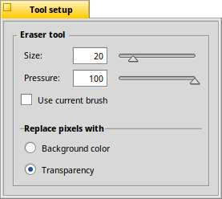
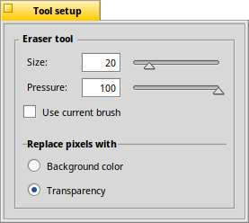

The Eraser tool - E
|  |
You set the of the eraser and with what you want to replace the touched pixels: either with the or with . The quick key to choose the eraser tool is E. |
Back: The Transparency tool Next: The Selection tool
|  |
You set the of the eraser and with what you want to replace the touched pixels: either with the or with . The quick key to choose the eraser tool is E. |